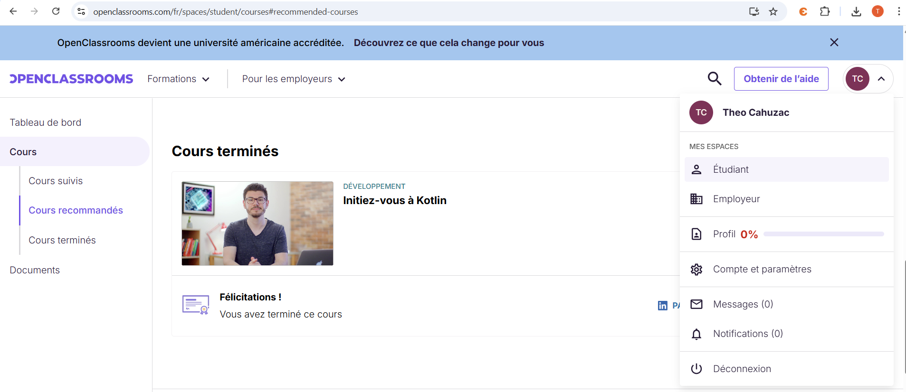

Après avoir suivi des cours de développement web et de programmation orientée objet à l'EPHEC, j'ai voulu en apprendre plus avec une formation en développement mobile. À ce moment là, j'envisageais de réaliser mon TFE dans ce domaine, ce qui m'a motivé à explorer Kotlin qui est le langage recommandé pour le développement Android.
J'ai découvert les spécificités de Kotlin par rapport à Java : les data classes, la gestion de la nullabilité, et la syntaxe concise du langage. J'ai également été confronté à la logique propre au développement mobile.
Cette formation a été révélatrice, mais pas dans le sens anticipé. J'ai compris et assimilé les concepts techniques mais j'ai surtout réalisé que le développement logiciel ne me correspond pas du tout. Face au débogage d'interfaces graphiques, j'ai ressenti davantage de frustration que de satisfaction. Une un sentiment que je n'ai pas lors d'exercices réseaux.
Cette prise de conscience a été importante pour affiner mon projet professionnel. Elle m'a confirmé que ma vocation se situe du côté du réseau et systèmes plutôt que du côté du développement.

⬅ Retour